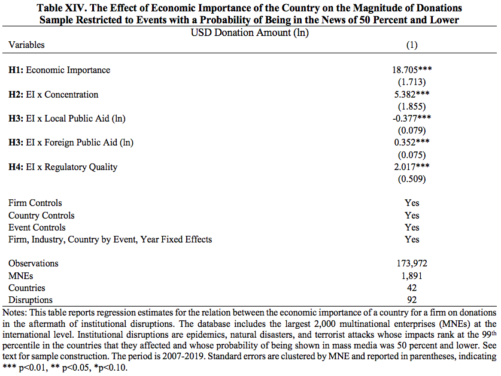

Is it Media Salience?
Studies have shown the influence of media on humanitarian aid and that this influence is heterogeneous across events and skewed to some type of disasters (e.g., earthquakes) and countries (e.g., higher income) (Eisensee and Strömberg, 2007; Franks, 2013). For some institutional disruptions, economic importance may have a negligible effect because of the magnitude of news coverage. Events such as the 2017 Hurricane Maria in Puerto Rico and the 2011 earthquake and tsunami in Japan were certain to receive firm aid irrespective of the economic importance of the country to the MNE. We thus followed (Stromberg, 2007) and reran the analyses with only disruptions that had a probability of being in the news of 50 percent and lower. The magnitude and direction of the estimates held.
